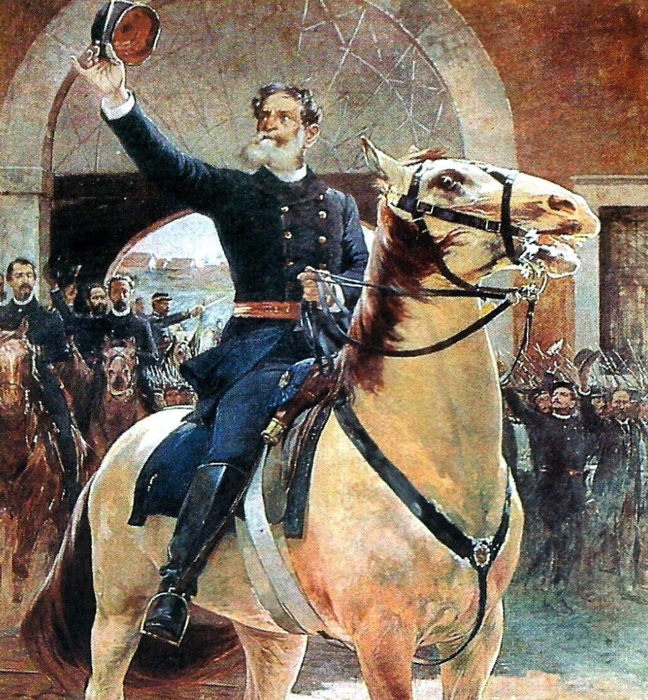

FUNDADA EM 1693
A história viva da nossa cidade
Contada por quem a viveu. Explore séculos de memória, cultura e transformação urbana através de documentos, fotos e relatos históricos.

Contada por quem a viveu. Explore séculos de memória, cultura e transformação urbana através de documentos, fotos e relatos históricos.
 FUNDAÇÃO
FUNDAÇÃO
A cidade foi fundada para estabelecer núcleos de povoamento e controle administrativo, dando início à nossa história.
 CORTE REAL
CORTE REAL
A chegada da Família Real transformou a estrutura social, política e econômica da cidade, abrindo caminho para o desenvolvimento.

REPÚBLICAO período republicano trouxe novas ideias de governança e liberdade, redefinindo o papel cívico e a modernização.
 INDUSTRIALIZAÇÃO
INDUSTRIALIZAÇÃO
A industrialização acelerou o crescimento urbano, trazendo infraestrutura, ferrovias e novas oportunidades de trabalho.
 METRÓPOLE
METRÓPOLE
A cidade se consolidou como metrópole, equilibrando inovação, preservação cultural e alta qualidade de vida.